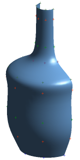

分析 B 曲面
-
点击实用工具工具条上的图层设置
 ，并清除图层1以及2的复选框。
，并清除图层1以及2的复选框。 -
按下 F5键以刷新显示。
-
选择信息→B 曲面。
-
选中全部三个复选框
 。
。-
显示补片边界 — 显示所选B-曲面的所有补片边界。
-
显示极点 — 显示所选B-曲面的所有极点。
-
输出至列表窗口 — 在信息窗口中列出极点的数目和裂缝，连续性类型，U和V补片类型，B-曲面的阶次，和有理或多项式状态。
-
-
点击确定。
您需要选择 B 曲面。
-
选择曲面。
-
点击确定以分析片体。

曲面的控制多边形以系统颜色显示(这个部件中是橙色)。
补片边界以对象颜色显示(这个部件是浅蓝色)，并用不同的线型指出连续性阶次。
-
实线 = C2
-
虚线 = C1
-
点划线 = C0
-
-
关闭信息窗口。
-
刷新显示。